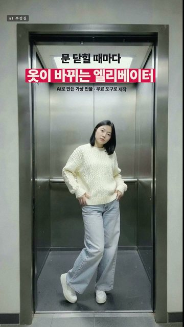

엘리베이터 문이 닫혔다 열릴 때마다 옷이 바뀌는 15초 패션 영상을 무료 도구로만 만들었습니다. 사진은 FLUX.2 klein 4B, 컷별 움직임은 LTX-2.5(둘 다 저희 PC, 그래픽카드 8GB), 문과 이어 붙이기는 파이썬·ffmpeg로 직접 합성했습니다. 생성 비용은 0원이고(클로드 구독·PC는 별도), 인물은 AI로 만든 가상 인물입니다.
① 엘리베이터에 선 사람 사진 한 장 ② ①을 참고 이미지로 넣고 옷만 바꾼 사진 3장 ③ 사진마다 LTX로 4~6초 움직임(마지막 컷은 걸어 나오기) ④ 빈 엘리베이터 사진의 벽 질감으로 문을 그려 넣고, 문이 꽉 닫힌 순간 다음 영상으로 교체(음악 박자에 맞춰 닫힘) 저희 PC 실측: 사진 장당 약 10~15초, 영상 4컷 약 19분(4초 컷 약 4분, 6초 컷 약 7분) 솔직히: 영상 AI(LTX)에 문 닫힘과 옷 교체까지 한 번에 시켜도 전환 1번은 됩니다(시험 4초 컷). 다만 새 옷을 사진으로 지정할 수 없어서, 옷 사진을 먼저 만들고 문은 편집으로 그렸습니다. 화보 같은 조명·스타일링보다는 평범한 폰 영상 느낌이고, 컷마다 얼굴이 조금씩 다릅니다.
Everyday snapshot shot on a phone by someone standing in the hallway of an ordinary Korean office building, looking straight into an open elevator. The camera is at chest height, level and centered, facing the elevator head-on, so the elevator looks symmetrical. The elevator doors are fully open and slid out of sight. The open doorway is tall and fills most of the picture: a thin dark brushed-steel door frame runs down both sides and across the top, with a narrow strip of plain light gray wall outside it, and a few gray hallway floor tiles at the bottom edge. Inside the elevator car: brushed stainless-steel side walls and back wall, a horizontal steel handrail on the back wall at hip height, a flat white LED ceiling panel, a dark gray floor. A young Korean woman in her late twenties stands in the middle of the elevator facing the camera, her whole body visible from the top of her head to her shoes, with a little space above her head and below her feet. Ordinary everyday face, straight black shoulder-length hair, calm neutral expression, looking at the camera. She holds nothing: both empty hands hang loosely at her sides next to her thighs. She wears a bright red long wool coat, open, over a black turtleneck, black straight trousers and black leather loafers. Natural skin texture with visible pores, no beauty retouch. Flat cool fluorescent elevator light with slightly uneven white balance, mild high-ISO noise, a little softness. Ordinary, unposed, documentary snapshot. No phone in her hands, no mirror selfie. There is no text, no numbers, no floor display, no button panel and no logo anywhere in the picture.
Edit the reference photo. Keep everything else exactly the same: the same woman with the same face, the same straight black shoulder-length hair and the same body, the same standing pose facing the camera with both empty hands hanging loosely at her sides, the same camera position and framing, the same elevator, door frame, walls, floor, ceiling light and lighting, the same everyday phone snapshot quality with natural skin texture. Change only her clothes: she now wears <옷> No text, no logos anywhere. <옷> 3벌: an oversized cream cable-knit sweater, light blue wide-leg jeans and clean white sneakers. / a black leather biker jacket over a plain white T-shirt, a short black pleated skirt and black knee-high boots. / a buttoned-up pastel mint green cardigan, a long white pleated skirt, white socks and black Mary Jane shoes.